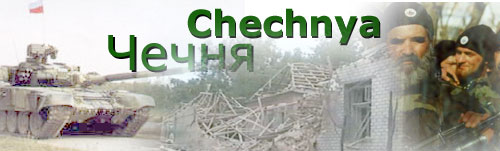

Lesson 2

Lesson Two
Current Situation in Chechnya
1. Assignment (2 hrs)
Read and Summarize text “Chechen Population is tired of War”
Hint: You can and should first skim the text for relevant in formation. Do this by examining and translating to yourself the title. Think for a moment:
- Examine the section headings.
- What is this article likely to be about?
- Who is speaking/writing, what issues does (s)he identify?
- Are any solutions or conclusions offered?
You should read carefully and understand (can you translate them to yourself?) the first and last sentence of each paragraph.
That's too hard!!
Examine the title! Are these words related to English? Can you understand them?
Look at just the title and first two paragraphs.
- Underline any words you may already know, or that seem familiar to English words and concepts you know. These might be cognates, or because of what you know of the military or the situation in Chechnya, familiar concepts.
- Highlight in one color the verb of the sentence.(Remember Russian doesn't need the verb "to be" in the present tense.) In the present or future tense this will help identify the subject by number (singular and plural) and person (first, second, third). The past tense form of the verb can identify the number and gender in the singular of the subject.
- Use a different color to identify the subject of the sentence (normally in the nominative or naming case).
- Now think through the following questions, which can be answered regarding the article:
- Who or what is the actor or agent (the subject)?
- What is he/she/it doing? (the verb)
- Where? When? Why and How does this action take place?
If you still have some time, try associating adjectives or modifiers with the respective nouns, and adverbs with the verb, adjective or other adverb which they modify. Remember that adjectival modifiers agree with the noun in gender, number and case. Adverbs have forms that do not change.
2) Assignment (1 hr)
Identify some of the major issues dealing with the war in Chechnya. Prepare a brief outline giving both the English and Russian word(s) for these issues.
Tip: Scan several articles in English on Chechnya. You can find several on Google.com or Yahoo.com.
(Scanning means to read quickly trying to locate and identify words of significance. Skimming is a very quick examination of a text to gather the main ideas. Examine the title and table of contents, then read the first and last sentences of each paragraph, stopping to read the entire passage only when it contains important information you are seeking.)
3. Assignment (1 hr)
Search and identify at least five sites in Russian that are related to Chechnya. Then prepare an annotated list of at least ten web pages useful for us to follow. Be sure to follow through on some of the links, checking both the viability of the links (do they still work) and their usefulness. Submit the list as Word document or use a web page editor and mount the page containing live links top your own web page and provide us with the location.
4. Assignment (2 hrs)
- Read the article “Situation in Chechnya must change for the Better”.
- Type a 250-word summary in Russian of the issues discussed.
That's too hard!!!
Examine carefully the first paragraph. Using the technique discussed above, identify the key issues and answer as many questions as you can: Who, what, where, when, why, how? Provide a translation from Russian to English of fifteen to twenty key words.
Summary
- Read and translate text on issues in Chechen Population is tired of War.(2 hours)
- Identify issues pertaining to Chechnya with English-Russian vocabulary. (1 hour)
- Prepare personal set of web links to articles and sites on Chechnya (1 hour)
- Read and summarize in Russian article on Situation in Chechnya must change for the Better.(2 hours)